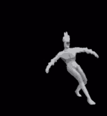

Minos Prime é o segundo e último chefe de [P-1: SOUL SURVIVOR], libertado da Flesh Prison após sua destruição. Embora proclame sua gratidão a V1 por libertá-lo, ele condena V1 à morte pelos crimes das máquinas contra a humanidade. Ele é considerado o chefe mais complexo e difícil do Ato I.
Minos Prime é a Alma Primordial do Rei Minos e o primeiro chefe da Alma Primordial de presumivelmente três, sendo o segundo Sísifo Prime. Deve-se notar que Minos Prime não é uma alma primária totalmente formada.
Minos Prime é um humanóide alto e luminescente. Seu corpo translúcido dá uma visão clara do seu sistema circulatório, que parece ser os únicos órgãos presentes. Há um buraco onde deveria estar seu rosto, e ele usa uma grande coroa como a usada por seu falecido Husk. Serpentes gêmeas podem ser vistas enroladas em seus braços.
Ele surge após derrotar Flesh Prison, pois foi preso dentro dela pelos anjos após ser morto por Gabriel antes do início do jogo.
